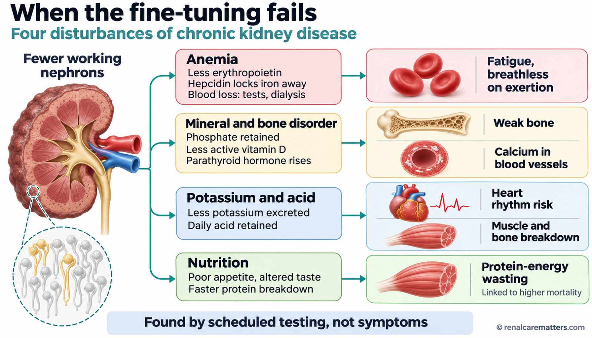
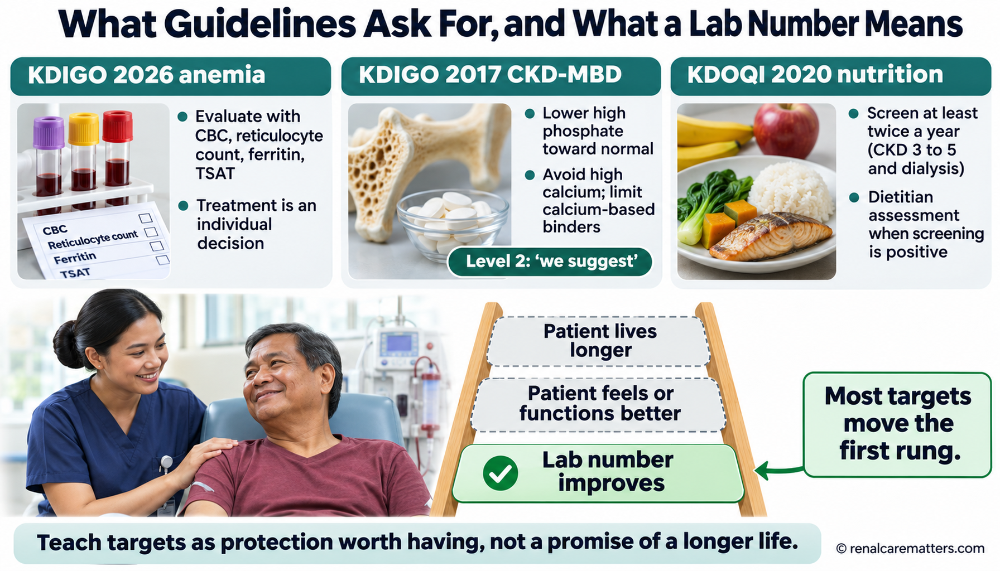
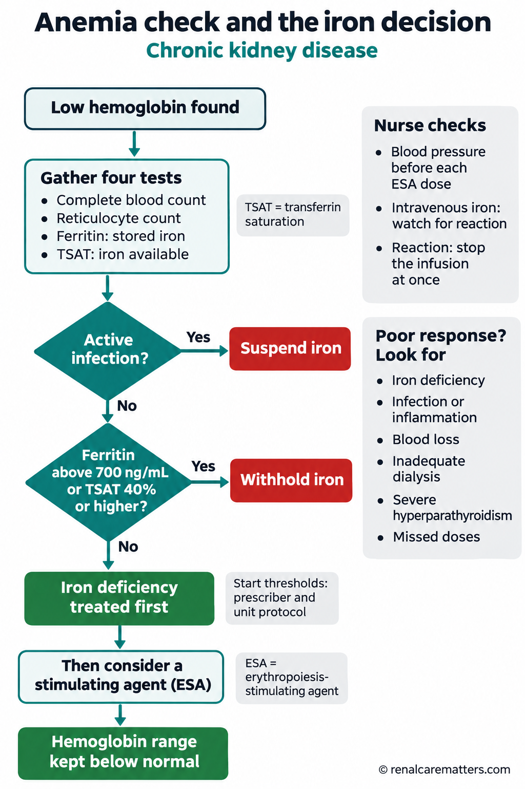
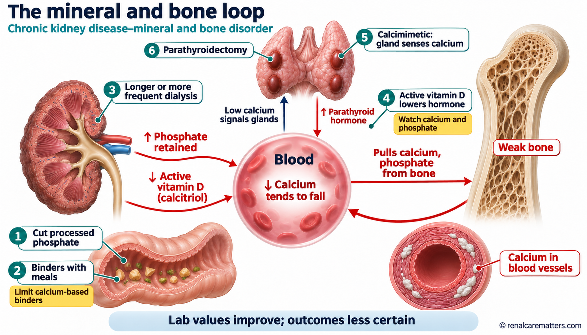
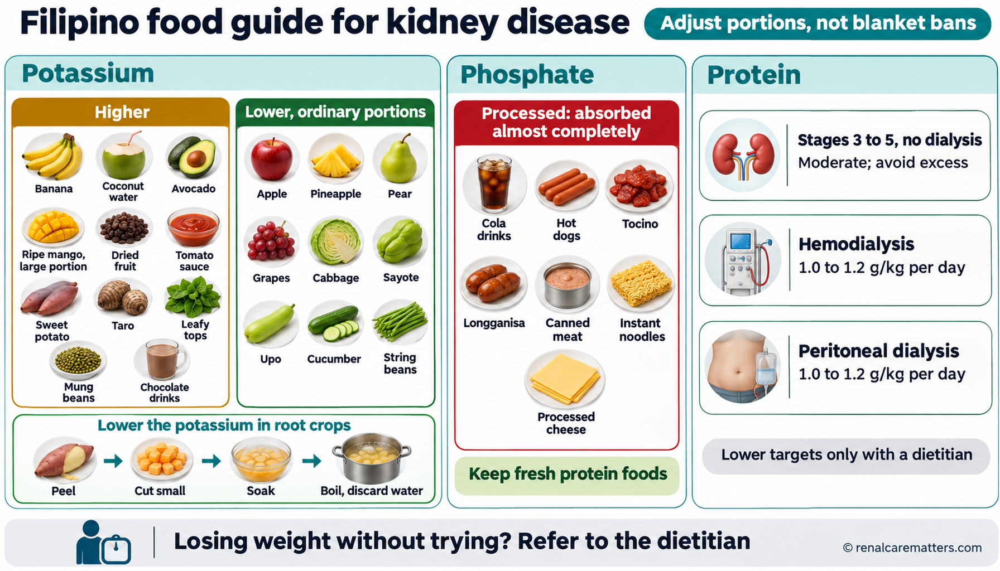
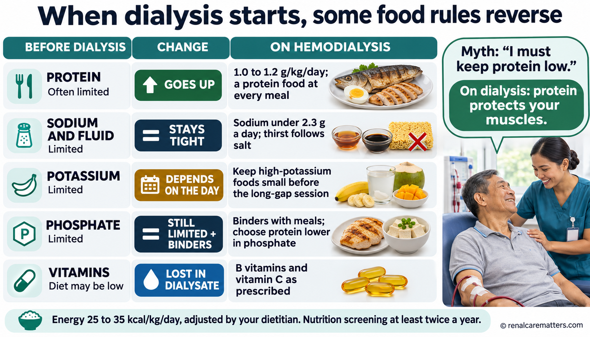
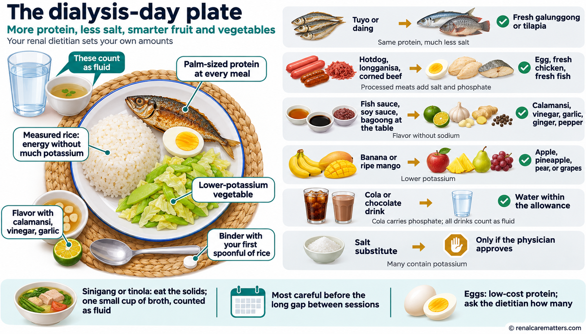
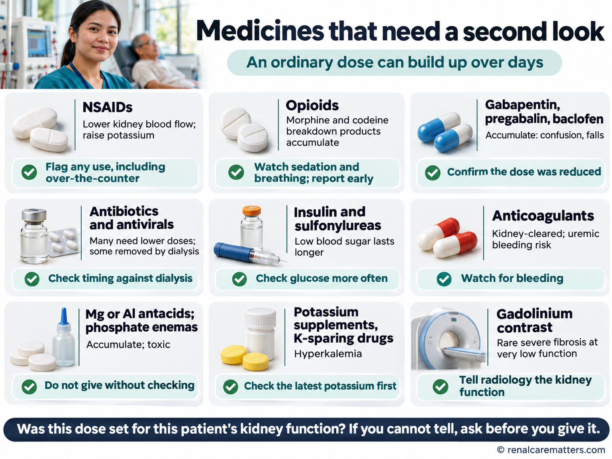

After this module you should be able to
- Explain why anemia develops in chronic kidney disease and name the tests that assess iron status.
- Describe how phosphate retention, low calcitriol, and parathyroid hormone interact, and why phosphate binders are taken with food.
- Recognize the nursing implications of potassium, acid–base, and volume disturbances.
- Screen for nutritional risk and arrange dietitian review for unintentional weight loss.
- Teach medicine timing accurately for the specific product prescribed.
- Describe the safe administration and monitoring of iron and erythropoiesis-stimulating agents.
- Compare the classes of phosphate binder and the other treatments for mineral and bone disorder.
- Give stage-appropriate, food-based dietary advice using Filipino examples.
- Identify medicines that are hazardous or need dose changes in advanced kidney disease.
- Explain how protein, sodium, fluid, potassium, phosphate, and vitamin needs change once a patient starts hemodialysis (HD), and how the timing of sessions and binders shapes daily advice.
- Adapt familiar Filipino meals, soups, celebrations, and low-cost protein foods for HD days, and confirm understanding with teach-back.
When the fine-tuning fails
Module 1 described the kidney as an organ that filters generously and then fine-tunes. Picture a house whose caretaker has left. Nothing collapses on the first day. A leak goes unfixed in one room, a drain clogs in another, and over months the whole house runs down.
The picture has a limit. In the house, each problem stays in its own room. In chronic kidney disease (CKD), the problems feed one another. Inflammation worsens both the anemia and the appetite. Retained phosphate drives the hormone changes that weaken bone. Acid speeds the breakdown of muscle.
Here is what you will see as the fine-tuning is lost. The red-cell signal weakens, so hemoglobin drifts down. Phosphate is not cleared, so the body borrows from bone to compensate. Potassium and acid are held back. Appetite fades as wastes accumulate. None of these announces itself with a dramatic symptom.
Your work is to find them early, through scheduled tests and the right questions at every visit, and to teach the few habits that make treatment work: the binder with the meal, the iron at the right time, the food that keeps muscle on.
Read the complications together. A low hemoglobin, a high phosphate, and a falling weight are often parts of one story.
Four disturbances and their causes
Anemia. Falling erythropoietin output is the central cause, but it is rarely the only one. Inflammation raises hepcidin, a liver hormone that locks iron inside storage cells and blocks its absorption from the gut. Iron can then be present in the body yet unavailable to the bone marrow. Blood lost to testing and to the dialysis circuit adds true iron deficiency. Two tests separate these states. Ferritin reflects stored iron, and it also rises with inflammation. Transferrin saturation (TSAT) reflects the iron in circulation that is available for making red cells.
Mineral and bone disorder. As filtration falls, phosphate is retained and the kidney makes less calcitriol. Blood calcium tends to fall. The parathyroid glands respond by releasing more parathyroid hormone (PTH), which pulls calcium and phosphate out of bone. Over years the result is weak bone and calcium deposited in blood vessels. This syndrome is called chronic kidney disease–mineral and bone disorder (CKD-MBD). Phosphate binders work in the gut. They attach to phosphate in food, so it leaves in the stool instead of being absorbed. A binder taken without food has little to bind.
Potassium and acid. With fewer working nephrons, the kidney can handle a smaller potassium load and a smaller daily acid load. Constipation, renin–angiotensin blockers, potassium-sparing diuretics, and salt substitutes made of potassium chloride push potassium higher. Chronic acidosis promotes the breakdown of muscle and bone.
Nutrition. Uremia blunts appetite and changes taste. Acidosis and inflammation speed protein breakdown. Overly strict diets remove the foods patients enjoy. The combined loss of muscle and fat stores is called protein-energy wasting. In observational studies it is associated with higher mortality.1 Those studies cannot show how much of the risk comes from the wasting itself and how much from the illness that causes it.
For each abnormal result, trace it back one step: which lost kidney job, and which habit or medicine, is pushing it?

What the guidelines ask for
The Kidney Disease: Improving Global Outcomes (KDIGO) 2026 anemia guideline is the first update since 2012. It calls for a complete blood count (CBC), reticulocyte count, ferritin, and TSAT when anemia is evaluated. It frames treatment as an individual decision that weighs symptoms against risks.2 Its algorithm for people not on dialysis treats iron deficiency before considering an erythropoiesis-stimulating agent (ESA). It advises withholding iron when ferritin exceeds 700 ng/mL or TSAT reaches 40%, and suspending iron during active infection.2 The same rule for withholding iron appears in the hemodialysis algorithm. The thresholds for starting iron differ by setting, and the prescriber and the unit protocol apply them. Earlier randomized trials showed that driving hemoglobin to normal levels with an ESA increased cardiovascular and stroke risk. That is why targets are deliberately set below normal.
For CKD-MBD, KDIGO 2017 suggests lowering elevated phosphate toward the normal range, avoiding high calcium, and limiting the dose of calcium-based binders. These are level 2 (“we suggest”) recommendations. Trials have shown changes in laboratory values more consistently than changes in fractures or survival.3 The phosphate level is a surrogate. It is not an outcome the patient feels. Your teaching should not promise more than the evidence shows.
The Kidney Disease Outcomes Quality Initiative (KDOQI) 2020 nutrition guideline considers routine nutritional screening at least twice a year reasonable in CKD stages 3 to 5 and on dialysis. It advises a comprehensive assessment by a registered dietitian for those at risk. It recommends an energy intake of 25 to 35 kcal/kg per day, and a protein intake that depends on the stage: lower before dialysis under close supervision, and 1.0 to 1.2 g/kg per day once on maintenance dialysis.1 For potassium, KDIGO 2024 practice points favor individualized advice over blanket restriction of fruits and vegetables. An ungraded practice point advises considering treatment when serum bicarbonate falls below 18 mmol/L in adults.4,5
Most of these targets move a laboratory number. Teach them as protection worth having, not as a promise of a longer life.

Treating anemia: iron, stimulating agents, and what to watch
Think of the bone marrow as a bakery. Erythropoietin is the order slip, and iron is the flour. An order slip with no flour produces no bread. The picture has a limit: in kidney disease the flour is often in the storeroom but locked away by inflammation, so a full storeroom (a high ferritin) can sit beside an empty mixing bowl (a low TSAT).
Iron first. Red-cell production cannot respond to any stimulus without available iron, so iron status is corrected before or alongside other treatment.2 Oral iron is inexpensive. It is poorly absorbed in advanced disease and often causes constipation or dark stools. It is taken apart from phosphate binders, antacids, and thyroid medicine. Intravenous iron bypasses the gut. It is the usual route for people on hemodialysis, given through the circuit during treatment.
Safe administration of intravenous iron rests on four habits. Give it only where staff and equipment to manage a severe reaction are at hand. Follow the product’s dilution and rate exactly, because preparations differ. Watch the patient during the dose and for a period after it for flushing, itching, chest or back tightness, breathlessness, or a fall in blood pressure, and stop the infusion at once if any of these occur. Do not give it during an active infection.2
Erythropoiesis-stimulating agents (ESAs). Epoetin and longer-acting agents replace the missing hormone signal. They are given under the skin or, on hemodialysis, into the venous line. The prescriber sets a hemoglobin range below normal, because trials that aimed for normal hemoglobin found more strokes, clotting events, and deaths. Nursing points:
- Check blood pressure before each dose; a rising pressure or new headache is reported, since these agents can raise blood pressure.
- Store as labeled, usually refrigerated; do not shake.
- Report a hemoglobin that climbs quickly as well as one that fails to rise.
- Watch the access: a higher hemoglobin can increase clotting.
When the response is poor. Sometimes hemoglobin stays low despite an adequate dose. Iron deficiency and infection or inflammation are the reasons to look for first. Inflammation includes an infected catheter or a failed transplant left in place. Then look for blood loss, inadequate dialysis, severe hyperparathyroidism, and missed doses. Raising the dose without looking for these is costly and adds risk.
Transfusion. Red-cell transfusion is avoided where possible in people who may receive a transplant. Exposure to donor antigens can sensitize the immune system and make a compatible kidney harder to find.2 When transfusion is needed for symptoms or bleeding, it is given slowly, ideally during dialysis in those on treatment, to limit the fluid and potassium load.
Before any dose of iron or ESA, check three things: the blood pressure, signs of infection, and the last hemoglobin. Report before you give if any of them is off.

Mineral and bone disorder: the treatments compared
| Treatment | How it works | Teaching and monitoring |
|---|---|---|
| Dietary phosphate control | Less phosphate absorbed | Phosphate added to processed food is absorbed almost completely, far more than the natural phosphate in plants. Biggest gains: cut cola drinks, processed and cured meats (hot dogs, tocino, longganisa, canned meat), instant noodles, and processed cheese. Do not restrict fresh protein foods to the point of malnutrition |
| Calcium-based binders (calcium carbonate, calcium acetate) | Bind phosphate in the gut | With meals. Total calcium load is limited because of concern about calcium deposition in vessels; report high calcium3 |
| Sevelamer | Non-calcium resin binder | Swallow with meals; bloating and constipation are common; separate from some medicines as the label directs |
| Lanthanum; sucroferric oxyhydroxide | Non-calcium binders | Chewed completely with meals, not swallowed whole; the iron-based binder darkens stools |
| Nutritional vitamin D (cholecalciferol) | Corrects deficiency | Different from active vitamin D; patients confuse the two |
| Active vitamin D (calcitriol and analogs) | Suppresses parathyroid hormone | Raises calcium and phosphate; these are monitored and the dose is held if they rise |
| Calcimimetic (cinacalcet) | Makes the parathyroid gland more sensitive to calcium | Taken with food to reduce nausea; lowers calcium, so tingling, cramps, or spasms are reported |
| Parathyroidectomy | Removes overactive gland tissue | After surgery calcium can fall sharply for days ("hungry bone"); frequent calcium checks and watching for tingling, spasm, and arrhythmia |
| Longer or more frequent dialysis | Removes more phosphate | Phosphate leaves tissues slowly, so time on dialysis matters more than blood flow |
Most of these treatments are judged by what they do to calcium, phosphate, and PTH. Those are surrogates. As the guideline section explained, the trials show the numbers moving more consistently than fractures or survival.3
The adherence problem with binders is real and understandable. The patient swallows many tablets, several times a day, often paid for out of pocket, to treat a number that causes no symptom. Asking “Which meals are hardest to remember?” achieves more than repeating the instruction.
A binder only works if it meets the food. Ask when it is taken, not only whether it is taken.

Nutrition by stage, in food terms
Diet advice changes with the stage. A rule that protected the kidney before dialysis can cause wasting after dialysis starts. Read the column that fits your patient today.
| Stages 3 to 5, not on dialysis | Hemodialysis | Peritoneal dialysis | |
|---|---|---|---|
| Protein | Moderate; avoid excess; lower targets only with dietitian supervision | Higher, 1.0 to 1.2 g/kg per day, because dialysis removes amino acids1 | 1.0 to 1.2 g/kg per day; protein is lost in the drained fluid |
| Energy | 25 to 35 kcal/kg per day, adjusted for age, activity, and weight goals1 | ||
| Sodium | Limited in all stages; the single most useful change for thirst, blood pressure, and fluid gain | ||
| Potassium | Individualized to blood levels | Usually limited; levels rise between sessions | Often liberal; low potassium is common |
| Phosphate | Limited when blood level rises | Limited, with binders | Limited, with binders |
| Fluid | Usually unrestricted unless swollen | Limited according to urine output; less salt means less thirst | Less strict; depends on fluid removal and urine output |
Potassium in Filipino foods. Higher: banana, coconut water, avocado, ripe mango in large portions, dried fruit, tomato sauce, root crops such as sweet potato and taro, leafy tops, mung beans, and chocolate drinks. Lower: apple, pineapple, pear, grapes, cabbage, sayote, upo, cucumber, and string beans in ordinary portions. Root crops and some vegetables lose part of their potassium when peeled, cut small, soaked, and boiled in plenty of water that is then discarded. Blanket bans on fruit and vegetables are no longer advised, because plant foods also bring fiber and alkali; portions and preparation are adjusted to the patient's own potassium results.4
Fluid, practically. For a person on hemodialysis who passes little urine, the working allowance is small. Teaching that works: measure the day's allowance into one bottle; count soup, rice porridge, ice, and gelatin as fluid; suck ice chips or rinse the mouth instead of drinking; and above all reduce salt, since thirst follows sodium. Weight gained between sessions is the feedback (Module 6).
Wasting. Warning signs are unintentional loss of more than about 5% of body weight in 3 months, a falling serum albumin, clothes becoming loose, and visible loss of muscle at the temples, shoulders, and thighs. Before blaming appetite, look for inadequate dialysis, acidosis, infection, depression, poor dentition, an over-restricted diet, and the cost of food.1
Change the portion and the preparation before you ban the food. A diet the family cannot cook will not be followed.

How eating changes once hemodialysis starts
Many patients reach hemodialysis (HD) after months or years of being told to eat less: less protein, less salt, fewer fruits. Once dialysis starts, some of that advice reverses and some becomes stricter. Nobody tells them which is which unless you do. Patients who are not told clearly often keep eating the low-protein diet they learned before dialysis, and they lose weight and muscle. The table earlier in this module set out the targets by stage; this section explains what changes on HD and why.
Protein goes up. Each session removes amino acids into the dialysate, and the treatment itself and the chronic inflammation of kidney failure increase protein breakdown. For a patient on HD who is metabolically stable, the KDOQI 2020 nutrition guideline recommends a protein intake of 1.0 to 1.2 g/kg of body weight per day, with energy of 25 to 35 kcal/kg per day adjusted for age, sex, activity, body composition, and inflammation.1 In practice this usually means a protein food at every meal. The patient’s individual target is set by the physician and dietitian; the nurse’s job is to make sure the patient knows that the pre-dialysis limit no longer applies.
Sodium and fluid stay tight. KDOQI recommends limiting sodium to less than 100 mmol (2.3 g) a day in people on dialysis, as in earlier stages, to help control blood pressure and fluid.1 On HD the reason becomes visible: almost all the weight a patient gains between sessions is salt and the water drunk to satisfy the thirst it causes. A large gain means a high hourly removal rate at the next session, with cramps, low blood pressure, and the longer-term harm described in Module 6. Fluid allowances are individual and depend on remaining urine output. When the gain is large, the first question is about salty food, not about how much water the patient drank.
Potassium depends on the day. Potassium accumulates between sessions and is removed during them, so the risk is highest just before treatment, and highest of all before the first session after the long gap between sessions (for most patients, the weekend). KDOQI suggests adjusting dietary potassium to keep the blood level in the normal range rather than applying a fixed limit.1 The practical teaching is to keep high-potassium foods small on the days without dialysis, particularly the day before the long-gap session, and to report a high pre-dialysis potassium together with a diet recall so that the dietitian and physician can see the cause. Constipation and some medicines also raise potassium, as described earlier in this module, and are checked before diet is blamed.
Phosphate and binders. Dialysis removes phosphate poorly compared with the amount eaten, so diet and binders remain necessary. A higher protein intake also brings more phosphate, so the dietitian steers patients toward protein foods with relatively less phosphate and away from processed foods with phosphate additives. Binders work only when they meet food in the gut: they are taken with meals and with snacks that contain phosphate, as the prescription for the specific product states. A patient who eats a heavy merienda without a binder, or who takes the binder with only coffee, gets little benefit.
Water-soluble vitamins. B vitamins and vitamin C dissolve in water and are lost into the dialysate, and restricted diets may already be low in them. KDOQI suggests folate, vitamin B12, or B-complex supplements to correct deficiency, and considers vitamin C supplementation for patients at risk of deficiency to reach the recommended intake of at least 90 mg a day for men and 75 mg a day for women.1 Supplements are taken as prescribed, usually after the session on dialysis days. Over-the-counter multivitamins or high-dose vitamin C, sold freely in pharmacies and by relatives, may contain amounts or ingredients unsuited to kidney failure; the patient is asked to show any supplement to the physician or pharmacist before taking it.
Screening for malnutrition. Protein-energy wasting is common on HD and is associated with worse outcomes. KDOQI considers routine nutrition screening at least twice a year reasonable, finds limited evidence for choosing one screening tool over another, recommends the 7-point Subjective Global Assessment as a valid tool for assessing nutritional status in patients on dialysis, and suggests the Malnutrition-Inflammation Score may also be used.1 These assessments are performed by the dietitian or a trained clinician under unit policy. The nurse supplies the evidence that triggers them: a falling post-dialysis weight, loose clothes, poor appetite, a meal skipped on dialysis days, a falling albumin, and the warning signs listed earlier in this module.
Eating during treatment. Practice varies between units. Some allow a light snack or an oral nutrition supplement during the session, which can help patients who leave home early and return late; KDOQI suggests a trial of at least 3 months of oral nutrition supplements when counseling alone does not meet the needs of a patient at risk of wasting.1 Others discourage eating on the machine, because digestion draws blood to the gut and can lower blood pressure, and because eating while lying back carries a risk of choking if the patient becomes drowsy or nauseated (Module 9). Follow the unit policy. A patient prone to low blood pressure is better advised to eat before arriving or after the session, and a patient with diabetes needs an individual plan agreed with the physician, because skipping a meal after taking insulin or tablets can cause low blood sugar during treatment.
| What patients often believe | What to teach on HD |
|---|---|
| “I must keep protein low to protect my kidneys.” | On HD, protein needs rise; aim for a protein food at each meal, as the dietitian advises |
| “Dialysis removes everything, so I can eat anything on dialysis day.” | Dialysis removes only part of what accumulates; salt, potassium, and phosphate still count every day |
| “If I drink less water, I can eat salty food.” | Salt causes thirst; the gain comes back as fluid. Cutting salt is what makes the fluid limit bearable |
| “Vitamins are always good for you.” | Only the vitamins prescribed; some over-the-counter products are unsafe in kidney failure |
On HD, protein goes up and salt stays down. Say both, in those words, at the first session and again whenever the weight falls.

Filipino meals on dialysis days
Advice that ignores what is on the family table is forgotten by the next meal. The most useful counseling starts from what the patient actually ate yesterday and changes the portion, the preparation, or one ingredient at a time. The renal dietitian sets the individual plan; the nurse, who sees the patient every session, reinforces it in familiar food terms and notices when it is not working.
Building the plate. A simple pattern for many patients on HD is a measured portion of rice, a palm-sized portion of protein food at each meal, and a serving of a lower-potassium vegetable, cooked with less salt. Rice and other plain starches provide energy without much potassium or phosphate; a patient who is losing weight should not be told to cut rice without the dietitian’s advice.
| Usual choice | Practical swap or adjustment | Why |
|---|---|---|
| Tuyo, daing, or other dried and salted fish | Fresh fish such as galunggong or tilapia, fried or grilled with little salt | Same protein, much less sodium |
| Hotdog, longganisa, tocino, corned beef, luncheon meat | Eggs, fresh chicken, or fresh fish, cooked at home | Processed meats carry both salt and phosphate additives |
| Instant noodles with the full seasoning packet | Plain noodles or rice with home-cooked fish or egg; if instant noodles are eaten, use little or none of the packet | Most of the sodium is in the seasoning |
| Generous fish sauce, soy sauce, or bagoong at the table | Calamansi, vinegar, garlic, onion, ginger, or pepper for flavor; keep the bottle off the table | Flavor without sodium |
| Banana or ripe mango as the daily fruit | Apple, pineapple, pear, or grapes in an ordinary portion | Lower potassium, as listed earlier in this module |
| Sweet potato, taro, or mung beans | Small portions, peeled, cut small, and boiled in plenty of water that is discarded, if the dietitian permits | Preparation lowers potassium |
| Soft drinks, especially cola, and chocolate drinks | Water within the fluid allowance, or a small portion of a lower-potassium fruit | Cola carries phosphate; chocolate drinks carry potassium and phosphate; both count as fluid |
| A “low-salt” salt substitute | Do not use unless the physician approves | Many are potassium chloride and can raise potassium dangerously |
Sabaw and soup. Sinigang, tinola, nilaga, bulalo, and other soups are central to Filipino meals and are often the hardest change. The broth is a problem in two ways: it is fluid that counts toward the day’s allowance, and it collects salt, seasoning cubes or sour mixes, and potassium that has leached out of the vegetables and meat. Practical advice: eat the solid pieces and take only a small cup of broth, counted as fluid; cook with fresh tamarind, calamansi, or other sour fruit and less salt rather than a seasoning mix, if the family is willing; choose lower-potassium vegetables such as sayote, upo, or cabbage for the pot; and avoid drinking soup to “wash down” rice. Rice porridge also counts as fluid.
Fiestas, birthdays, and family gatherings. Celebrations are where many large weight gains begin: lechon with its sauce, pancit seasoned with soy sauce, kare-kare with bagoong, dinuguan, cakes, and soft drinks, often over a long weekend before the long-gap session. Forbidding the patient to attend does not work and harms quality of life. A plan agreed in advance works better:
- Eat a small home meal before going, so that hunger does not choose the plate.
- Use a small plate, take one portion, and choose grilled or roasted dishes over saucy ones; go easy on sauces and bagoong.
- Bring or take the binder and use it with the meal.
- Count every drink, including soft drinks and soup; ice chips or a small cup help.
- Be most careful when the gathering falls before the long gap between sessions.
- Tell the unit afterward. Honest reporting allows the next session to be planned safely, and it is not a confession to be scolded.
Families often bring food to show care. Inviting the person who cooks to a counseling session, or giving them the swap list, often changes more than talking to the patient alone.
Protein on a tight budget. Higher protein needs come at a time when dialysis has strained the household’s finances. Eggs are among the least expensive sources of good-quality protein; egg whites provide protein with less phosphate than the yolk, and the dietitian advises how many whole eggs suit the patient. Small, inexpensive fresh fish, chicken parts, and tofu in moderate portions are other options. Processed meats and canned goods are cheap and convenient, but their sodium and phosphate additives make them poor value for a patient on HD. If cost is the reason a patient eats too little protein, refer to the social worker as well as the dietitian; that is a financial problem, not a knowledge problem.
Teach-back. Teach-back means asking the patient to explain or show, in their own words, what they will do, then correcting and repeating until the explanation is right; a systematic review linked it to better understanding and recall across many settings, although the included studies varied in design and quality.6 Questions that work in food counseling:
- “Tell me what you will have for lunch tomorrow, which is a non-dialysis day.”
- “Show me how much sabaw you will take with your sinigang.”
- “When will you take your binder at your granddaughter’s birthday party?”
- “What will you use instead of fish sauce?”
Record what was taught, who was present, and how understanding was checked. Then use the next session’s weight gain, potassium, and phosphate as feedback, and celebrate improvements as clearly as you report problems.
Start from yesterday’s plate, change one thing at a time, and check it with teach-back.

Monitor, teach, refer
Monitor. At each visit, review hemoglobin with the iron indices, calcium, phosphate, PTH when available, potassium, and bicarbonate. Note the trend, not only today’s value. Ask about fatigue, breathlessness on exertion, itch, bone pain, muscle weakness, and constipation. Weigh the patient and compare with the last three visits. Ask directly about appetite and whether clothes have become loose.
Teach. Medicine timing is product-specific, so reading the label or prescription is part of the teaching. Phosphate binders are taken with meals and with snacks that contain phosphate. Some are swallowed and some are chewed, and the instructions are not interchangeable between products. Oral iron and some binders interfere with the absorption of other medicines and may need to be taken apart from them. Patients on injected ESAs need to know the schedule, why hemoglobin is not pushed to normal, and to report a headache or a rise in blood pressure.
Refer. Unintentional weight loss, poor intake for more than a few days, or a low or falling albumin are reasons for a dietitian referral, not for more restriction. In the Philippine setting, counseling works best when it starts from what the family already cooks. Changing the portion and preparation of familiar dishes is easier to keep up than a list of forbidden foods.
A patient who is losing weight needs more food, not more rules. Refer before you restrict.
Medicines that need a second look in advanced kidney disease
| Group | Concern | Nursing action |
|---|---|---|
| Nonsteroidal anti-inflammatory drugs | Reduce kidney blood flow; raise potassium and blood pressure | Flag any use; ask about over-the-counter products |
| Opioids | Morphine and codeine form active breakdown products that accumulate, causing drowsiness, twitching, and slowed breathing; meperidine is avoided | Monitor sedation and respiratory rate closely; report early |
| Gabapentin, pregabalin, baclofen | Accumulate; confusion, drowsiness, falls | Check the dose has been reduced; report new confusion |
| Antibiotics and antivirals | Many need dose reduction; some are given after dialysis because dialysis removes them | Confirm timing relative to dialysis on the order |
| Diabetes medicines | Hypoglycemia from insulin and sulfonylureas lasts longer | Monitor glucose more often when intake is poor |
| Anticoagulants | Several depend on kidney clearance; bleeding risk is also higher in uremia | Watch for bleeding; confirm kidney function is on the chart |
| Magnesium- or aluminum-containing antacids; phosphate enemas | Accumulate; toxic | Do not give without checking; suggest alternatives be prescribed |
| Potassium supplements and potassium-sparing agents | Hyperkalemia | Check the latest potassium before each dose |
| Gadolinium contrast for magnetic resonance imaging | Linked to a rare, severe skin and organ fibrosis at very low kidney function | Make sure the radiology team knows the kidney function |
The kidney clears many drugs and their breakdown products. When it fails, an ordinary dose can build up over several days. Your role is to notice the first sign, the drowsy patient or the new twitching, and report it before the next dose.
Symptoms deserve treatment too. Itch, restless legs, cramps, poor sleep, and low mood are common, under-reported, and treatable. Ask about them by name. Itch improves with adequate dialysis, phosphate control, and regular unperfumed moisturizer, and persistent itch has specific treatments the physician can prescribe. A two-question mood screen takes a minute. Depression in kidney disease is associated with missed treatments and worse outcomes.
Before any medicine in advanced kidney disease, ask whether the dose was set for this patient’s kidney function. If you cannot tell, ask the pharmacist or prescriber before you give it.

Case: Tired, itchy, and losing weight
Mr. Danilo, 67, has stage 5 CKD and is not yet on dialysis. It is his three-monthly clinic visit, and you, Mr. Paolo Santos, are doing the nursing review before he sees the nephrologist. He reports fatigue and itch.
His hemoglobin is 92 g/L, ferritin 80 ng/mL, TSAT 14%, and phosphate 6.4 mg/dL. He was prescribed a phosphate binder three times daily. He takes all three tablets at bedtime “so I don’t forget.” His weight today is 58 kg on the clinic scale. Three months ago it was 62 kg. His wife says he now eats only plain rice and boiled vegetables, because a neighbor told him everything else is bad for the kidneys.
Before reading on, decide what you would assess, what you would communicate and to whom, what you would teach, and what would make you escalate. Then compare with the outline below.
Assess
Communicate
Teach
Escalate
Check your understanding
Each visit draws 5 questions at random from this module’s 17-question bank, in a shuffled order. Choose the single best answer for each, then select Check answers; a rationale appears under every option. Reload the page or select New set of questions for a different mix. Nothing you select is sent anywhere; scoring happens in your browser.
What this module builds
Each competency names an observable ability, the level this module aims for, and how that level is confirmed. Levels follow Miller’s pyramid. Self-study reaches knows; the higher levels are reached only when an educator or preceptor verifies them, and they are recorded on the competency checklist.
- Knows Explains the reasoning and applies it to cases. Verified by the self-assessment and the nursing case.
- Shows how Demonstrates the skill in simulation, a skills station, or teach-back. Verified by an educator.
- Does, supervised Performs the task with real patients under direct supervision. Verified by preceptor observation.
- Does, independent Performs the task without direct supervision after preceptor sign-off under the unit’s policy.
| Competency | Thread | Target level | Verified by |
|---|---|---|---|
| Explains why anemia develops in CKD, including erythropoietin loss and hepcidin-blocked iron, and names ferritin and TSAT as the tests of iron status. | Interpreting results and trends | Knows | Self-assessment, Nursing case |
| Describes how phosphate retention, low calcitriol, and PTH interact in mineral and bone disorder, and why phosphate binders work only with food. | Interpreting results and trends | Knows | Self-assessment, Nursing case |
| Recognizes medicines and habits that raise potassium, and reports rising potassium, falling bicarbonate, or fluid gain trends to the physician. | Interpreting results and trends | Knows | Self-assessment, Nursing case |
| Compares calcium-based and non-calcium binders, nutritional and active vitamin D, and calcimimetics, stating the teaching and laboratory monitoring each requires. | Medicines and their safety | Knows | Self-assessment |
| Explains ESA monitoring: checks blood pressure before each dose, reports a rapid hemoglobin rise or poor response, and names common causes of poor response. | Medicines and their safety | Knows | Self-assessment, Nursing case |
| Identifies medicines hazardous or needing dose changes in advanced kidney disease, such as opioids, gabapentinoids, phosphate enemas, and magnesium antacids, and flags them for review. | Medicines and their safety | Knows | Self-assessment, Nursing case |
| Demonstrates intravenous iron administration as ordered: confirms no active infection, follows product dilution and rate, observes for reaction, and stops and escalates if one occurs. | Medicines and their safety | Shows how | Simulation |
| Teaches product-specific phosphate binder timing (with meals, swallowed or chewed as labeled) and confirms understanding with teach-back. | Patient and family teaching, nutrition, and shared decisions | Shows how | Teach-back |
| Presents hemoglobin with ferritin and TSAT, states the trend, and reports anemia with low iron indices to the physician. | Interpreting results and trends | Does, supervised | Observed practice |
| Verifies how the patient actually takes each binder and corrects timing errors using teach-back. | Medicines and their safety | Does, supervised | Observed practice |
| Performs a brief nutritional screen (weight trend, appetite, intake) and arranges dietitian review for unintentional weight loss instead of further restriction. | Clinical assessment and fluid status | Does, supervised | Observed practice, Record review |
| Identifies one potassium- or phosphate-raising habit and gives individualized, food-based advice built on familiar Filipino dishes, not blanket bans. | Patient and family teaching, nutrition, and shared decisions | Does, supervised | Observed practice |
| Explains how protein, sodium, fluid, potassium, phosphate, and water-soluble vitamin needs change once hemodialysis starts, including potassium risk before the long-gap session and binder timing with meals and snacks. | Patient and family teaching, nutrition, and shared decisions | Knows | Self-assessment, Nursing case |
| Counsels a patient on hemodialysis using familiar Filipino meals, soups, celebrations, and low-cost protein foods, and confirms understanding with teach-back. | Patient and family teaching, nutrition, and shared decisions | Shows how | Teach-back, Skills station |
| Links weight gain, pre-dialysis potassium and phosphate, weight trend, and a diet recall, and refers a patient at nutritional risk to the dietitian and physician. | Clinical assessment and fluid status | Does, supervised | Observed practice, Record review |
With your preceptor
With your preceptor and, where available, the renal dietitian, review two patients with CKD stage 4 to 5 or on dialysis. These are prompts for supervised learning, not a procedure. Your preceptor observes and signs off each item on the unit’s own competency form; the educator page has a printable version.
- Presents hemoglobin with ferritin and TSAT and states the trend.
- Verifies how the patient actually takes each binder and corrects timing using teach-back.
- Performs a brief nutritional screen (weight trend, appetite, intake) and states whether referral is needed.
- Identifies one potassium- or phosphate-raising habit and gives individualized, non-blanket advice.
Read next on this site
- Anemia ManagementAnemia in CKD in depth, updated for KDIGO 2026.
- Kidney, Bone, and Heart: Mineral and Bone DisorderMineral and bone disorder, explained from mechanism to treatment.
- Potassium and HyperkalemiaPotassium sources, medicines, and safe limits.
- Nutrition for Kidney PatientsRenal nutrition with Filipino food examples.
- KDIGO guideline library (anemia, CKD-MBD)Primary source (external site).
Module 3 of 1714 modules to go